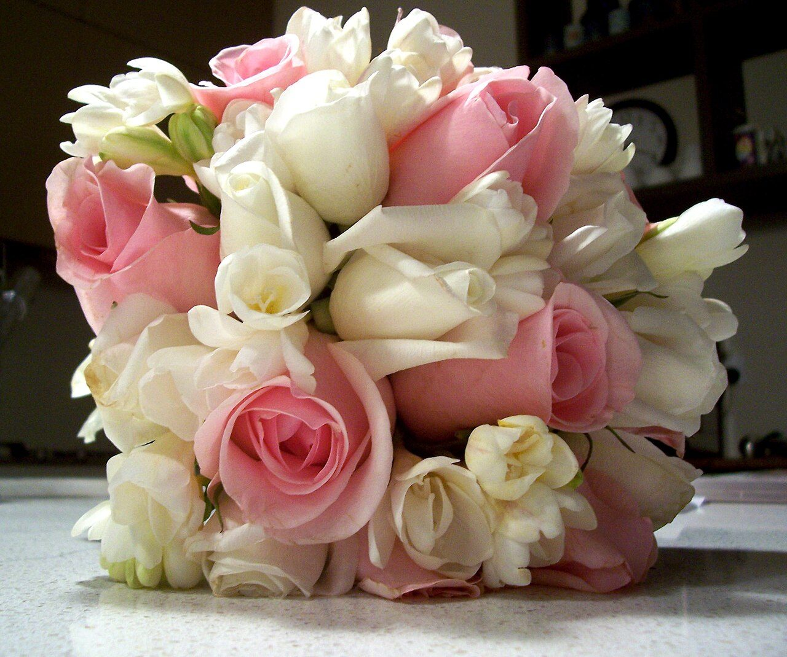

アクセス
宮崎県小林市細野
| 住所 | 〒886-0004 宮崎県小林市細野2290-24 |
|---|---|
| 電話 | 080-2746-2404 |
| hairsalonao | |
| 営業時間 | 準備中(お問い合わせください) |
| 定休日 | 準備中(お問い合わせください) |
| 駐車場 | 準備中(お問い合わせください) |

宮崎県小林市細野
| 住所 | 〒886-0004 宮崎県小林市細野2290-24 |
|---|---|
| 電話 | 080-2746-2404 |
| hairsalonao | |
| 営業時間 | 準備中(お問い合わせください) |
| 定休日 | 準備中(お問い合わせください) |
| 駐車場 | 準備中(お問い合わせください) |

掲載写真はフリー素材のイメージ写真であり、店舗の実際の様子ではありません。日本国外で撮影されたものや撮影地不明のものを含みます。